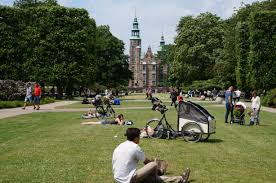

Det Grønne og Urbane København
Botanisk Have

En levende oase i centrum med Danmarks største samling af planter og det smukke, historiske Palmehus i glas og støbejern. Haven rummer over 13.000 forskellige plantearter fra hele verden, og i sommermånederne kan du besøge det magiske Sommerfuglehus. Det er det perfekte, fredfyldte sted at trække cyklen rundt på stierne og nyde duften af sjældne blomster og gamle træer.
Rosenborg (Kongens Have)

Placeret midt i Kongens Have, hvor de grønne plæner og gamle alléer danner den perfekte ramme for en rolig cykeltur. Haven er Danmarks ældste kongelige park, og om sommeren fyldes den med lokale, der solbader, holder picnic og spiller havespil under de enorme trækroner. Den smukke rosenhave lige foran slottet dufter fantastisk og giver det mest eventyrlige baggrundsbillede.
Søerne

De tre markante, rektangulære søer, der indrammer Københavns brokvarterer, og fungerer som byens foretrukne rute for løbere og cyklister. Søerne var oprindeligt en del af byens gamle forsvarssystem, men er i dag forvandlet til et levende rekreativt område fyldt med svaner og hyggelige caféer. Her får du for alvor følelsen af det lokale københavnerliv.
Superkilen

En prisbelønnet, farverig og anderledes urban park på Nørrebro, der hylder bydelens diversitet med genstande fra hele verden. Parken er opdelt i tre zoner: Den Røde Plads til moderne byliv, Den Sorte Plads med springvand og marokkanske mønstre, og Den Grønne Park til afslapning. Her finder du alt fra neonreklamer fra Rusland til rutsjebaner fra Japan.
Klar til at opleve Københavns grønne side?
Fra botaniske haver til kreative byparker — book din tur i dag.
Kontakt os